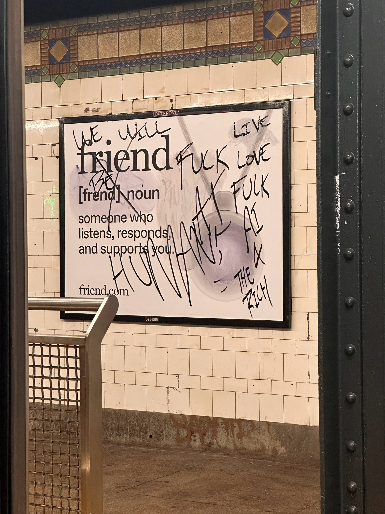

Retooling Solidarity, Reimagining Justice
Would you ever think of yourself as a computer? No right? Because humans are able to express their feelings and move uncontested. Well what if we said language was code? Would you see yourself as a machine then? When I was younger I used to question the different ways language worked and why it had the meaning it does and that made me think of this quote, “Code is a peculiar kind of text, written, maintained, and modified by programmers to make a machine operate. It is a text nonetheless, with many of the properties of more familiar documents”. Who decided when they looked at the color red that it would be named red or that something for sitting would be called a chair? What if the words for refrigerator and desktop were switched? How is meaning attached to words? When we use slang is it based on the original meaning of a word or something random? If we know multiple languages and are able to communicate in different parts of the globe are we programmable machines? The people responsible for all of the languages spoken around the planet are then also categorized as programmers, and that means we are the programmed. We pass language down and that makes our role of programmed programmers interchangeable.
Another quote I found interesting was, “Randomness and chance operations are so necessary to daily life, well beyond the realm of games, that randomness itself is framed as fixed, repeatable, and knowable.” I think this is the case because we don’t know where we come from. At least in my community there has always been talk about how everything is in god’s hands and how they will provide in times of need. That uncertainty is what drives religion and what keeps people wedged between a rock and a hand place. Ultimately I do think that uncertainty has more reach than just religion but it is a good driver to keeping people submissive and “waiting” for the uncertain times to pass. Sometimes we would prefer to remain uncertain because we know making a decision will lead us to the obvious which is not always what we want. A lot of people take advantage of randomness and chance to further themselves in a game no one wants to play because making decisions is hard and affects everyone, not just the person making the decision. Sometimes we create uncertain situations on purpose to give us more time to wade through what we feel like is endless time, but with uncertainty also comes confusion, violence, and sensitivity and what could’ve been a short period of leaving life up to chance is now a series of distressing decisions.
One of the most important things I took away from the film was if everything were to go digital we would be fucked because we would be left with nothing if the internet were to suddenly shut down or malfunction. This made me think of the current shift we are now facing where the manufacture of pennies is to stop very soon. Could this be a chain reaction to getting rid of physical currency? Are we on our way to becoming a nation that only uses digital currency? What happens with those who don’t have access to technology or the laptop in our pocket that we call a phone? How would you buy your groceries if someone stole your phone which would serve as your wallet, license, and your photo album among other things. In a purely digital world you would need some kind of technological device as well as electricity to be able to access your money. If cash becomes useless what will happen to the houseless people who ask for a dollar? Will they be granted credit card machines so we can tap our phones when we feel like giving them 50 cents? What happens to our money if there was ever a power outage? Would there be a loop hole where our money could be swiped out from under us? Would we be considered cashless until the power comes back on? And if money is power but our money is digital then does that mean no one would have power?
I asked this question in last week’s post: Who are we outside of the digital things we have access to? I love flipping through a book and making notes in it, at some point will physical books be phased out just like newspapers? Will stores close down in mass due to people preferring online shopping? Will supermarkets start to just ship the items people order online? And if that’s the case anything can be hacked, anything could be moved or removed so what is stopping anyone from hacking your shipped order or your surveillance camera? How do you know your favorite book won’t be pulled from shelves, made digital, and rewritten to fit a certain agenda? Or that your favorite piece of music won’t disappear from your spotify playlist? What do we have access to if there isn’t a wifi connection?
I have always wondered how we can see websites that were created elsewhere like Manila or London? How does the information someone put on a website appear on our screen as if we were in that person’s living room? And in turn how does the government ban us from looking at certain kinds of media online? How are they able to censor what we can and can’t see? These questions make me think about the current push that people have made to own the media they consume and that made me think about this quote, “since every form of representation is migrating to electronic form and all the world’s computers are potentially accessible to one another, we can now conceive of a single comprehensive global library of paintings, films, books, newspapers, television programs, and databases, a library that would be accessible from any point on the globe.” Now don’t get me wrong, this list is comprehensive and super impressive but is anyone thinking about what happens if everything we know goes digital? How will anyone who doesn’t have access to an electronic device be able to ride the bus if the MTA is no longer accepting coins? What if bridge signals become digital, if they malfunction will boats crash? Will people die? What if your self-driving car makes a mistake and runs a red? Is the “driver” responsible for that? I love that we can see pieces from the Tate Modern, read banned books, and listen to music from different countries, but have we gone too far? Do we actually own anything if everything is reliant on an internet connection? When the connection is shaky our media runs slow and when the connection is down, we don’t have anything. Who are we outside of the digital things we have access to?
Working at a charter school as an empathetic person is not like anything else you’ve ever had to experience. They are famous for being data driven, solution oriented, and different from the public school system. Underneath all of that they are cesspools mimicking complicated data centers, pockets full of dollar signs, and not a single care in the world for education and learning. Every student is a number and that number has to yield high results in order to be valuable within the system. Knowing this as an educator within the charter school system made me think of this quote, “People are reduced to data, surveillance occurs on a global scale, minds are melded to screenal reality, and an authoritarian power emerges that thrives on absence.” We are all data points within the system and that is shown to us through the various statistical numbers used to achieve population data. The percentage of Black people who voted, the percentage of Black people who voted for Trump, the percentage of Black men who voted for Trump vs the percentage of Black women that voted for Trump, the percentage of Black men who voted for Trump ages 18-25 vs the percentage of Black men who voted for Trump ages 55-65. All of these numbers get mixed and mingled until you’re standing in a square with everyone else who looks like you according to the organizing system. All of this data tells us exactly where we fall within this tactical structure, what we don’t know is how whoever acquires this data, uses it. And that’s not even the scariest part anymore. We are so used to organizations selling our data that we don’t even demand that these companies be reprimanded, we just want the 5 dollars we’ll get from the settlement case. After ancestry.com sold their customers' actual DNA data nobody cares about their data being sold online anymore, and even if we did care there would be no way to stop companies from selling our private information. We are so accustomed to not having the privacy of owning our data that we no longer care as long as we get to keep using the apps we love. We are tracked on every site we browse, every country we travel to, and every gas station we fill our tank at. The tracking is endless and the real question that comes to mind is, where is all of this information stored? We don’t think about all the camera footage of the stores we shop at, or the swiping of our cards when we purchase something, or even the meaningless strolls we take when we’re having a bad day, all of that footage is somewhere capturing pieces of our lives that someone else can put together. That’s what authoritarian powers want, access to us even though we haven’t said yes.
“There are many reprobate (rogue) mingled with the good, and both are gathered together in the data base as in a dragnet; and in this world, as in the sea, both swim enclosed without distinction in the electronic net”. This quote made me think about cancer research technology and AI war technology. Both of these kinds of research can be used for good or bad and affect the world in different ways. If we stop the development of tech altogether then everything has to stop, even the cancer research and that would mean that millions of people continue to die everyday to this vicious disease, so we can’t stop. As long as good exists, so too does evil. But at some point will the bad outweigh the good? Will we be forced to stop if the bad becomes too much to bear? If communities are left without clean water to drink because of all the water being used to cool off computers? If permafrost continues to melt and add to our already rising sea levels? If AI gets to the point where we can’t differentiate if we’re talking to a real person or a coded program? When do we stop capitalizing and focus on stimulating growth with what we already have?
Authors like Toni Morrison, Bell Hooks, Yaa Gyasi, Zora Neale Hurston etc, have revolutionized writing in such an educated way. In a way that white people never meant for black women to be educated. That’s why this quote resonated with me so intensely, “Cyborg writing is about the power to survive, not on the basis of original innocence, but on the basis of seizing the tools to mark that world that marked them as other” …. “Feminist cyborg stories have the task of recoding communication and intelligence to subvert command and control.” I remember watching an interviewer ask Toni Morrison if she ever thought that her writing might include the lives of white people. To which Morrison responded that white people are everywhere and are always being written about and that one day she would understand that her question had racist undertones because white people's history is everywhere, even in places it doesn’t have to be. I think about that interview often and it makes me think of all the times my white English teachers would make space for the women of color they proudly taught and chose works by these eloquently spoken Black women. I think about what a privilege it is to have been so well read at such a young age. To be able to articulate myself well even in the whitest of rooms where no one is expecting it and it’s all thanks to cyborg writing. It’s all thanks to those that were given hell when their books came out about how racism is embedded in every framework we’ve ever known. All the story lines and plots I’ve read of black women fighting to be seen, to be themselves even in the last couple of pages as their lungs give out with hope that the ones that come after them will have it better, that we won’t have to fight as hard. How saddening to think that kids today maybe won’t get to read these kinds of texts in high school because knowledge is power and a well read society is a powerful one, the opposite of what an authoritarian state wants. The war on literacy is intentional and it is an attack on democracy because an illiterate society is impressionable, easily gaslit, and powerless. Cyborg writing has been the start of so many revolts, rallies, and cries for equality, but it has also been a tool used to bridge community, to be able to advocate for yourself, and you love yourself unconditionally. Cyborg writing has paved the way for us to be able to express ourselves because no fight has ever been won without the words of a black woman and every fight for liberation has always had the help of black women.
It’s insane how far we’ve moved through TV time and tech with sitcoms, reality tv shows, and Tia and Tamera in Twitches. Television and film have always been pretty fictional, not counting hidden camera series like John Quiñones “What would you do?” and Chris Hansen’s “ To Catch A Predator” which I refuse to believe were scripted. TV has always played an interesting role in our lives. It used to be a literal box that had our favorite channels, our most hated characters, and had seen us shed countless amounts of tears during reruns of Derek Shepard’s death in Grey’s Anatomy. Now that box has turned into multiple dimensions of screen with far more viewership. A quote I thought was super interesting in this reading was, “There is no such thing as unmanipulated writing, filming, or broadcasting. The question is therefore not whether the media are manipulated, but who manipulates them. A revolutionary plan should not require the manipulators to disappear; on the contrary, it must make everyone a manipulator.” When I read this quote I immediately thought about Love Island and how Cierra got booted off the show for a couple of racial slurs she had said some years back. We as the audience manipulated the network by threatening low viewership and called for her removal from the show. That altered her reality and manipulated how the rest of the show and “connections” between the remaining cast members were made. Had Cierra been allowed to stay maybe her connection with Nick would’ve lasted and viewership would’ve taken a drastic hit. In all reality this show and many other reality tv shows are manipulated before the shows even begin filming because people manipulate their acts when they know they are on camera and especially knowing everyone else will definitely see their actions at some point. In the episode where the cast learns how America feels about their actions in the show, some of them shift themselves to align with what we want to see on our screens and we watch them manipulate their own actions in later episodes to fit our visual molds. This quote caught my attention because it relates back to the point I always make that everything is political. The kind of tv we watch is no exception. When we begin to question who is manipulating the entertainment we watch, we can begin to see the trends in how we’ve been socialized to think. It makes me think of porn and how the kind of porn we enjoy gives other people insight into who we are. If a white man watches porn where the main star is a black woman every time it could mean he most likely has a fetish and feels as though he cannot act on being with a black woman, most likely doesn’t surround himself with black women or hates black women but loves how we look so can’t bring himself to be with a black woman. The same thing goes for people who watch LGBTQ+ porn but consider themselves straight in “real life”. The porn we watch is indicative of how we would like to manipulate our own lives and the manipulators who make porn cater to the fetishes people want to be able to “experience”.
It’s dystopian to think that a handful of people can control the ways in which we see the world and the different truths that exist out there being limited to a few preselected half truths that we are granted the permission to see. “The problem of censorship thus enters a new historical stage. The struggle for the freedom of the press and freedom of ideas has, up till now, been mainly an argument within the bourgeoisie itself; for the masses, freedom to express opinions was a fiction since they were, from the beginning, barred from the means of production - above all from the press - and thus were unable to join in freedom of expression from the start” This quote made me think of all the ways censorship applies to us without us knowing it does. The different ways we are censored without the knowledge that we never had a choice in the first place. I thought it was funny when that white guy said that TV would be the ruin of the white man in South Africa because white people have always been the cause of their own ruin. Imagine being so ill-intentioned that you would deny a population (if you could) of being aware of the atrocities you’re committing. War and crime at the hands of the government have always tried to be hidden from the public and the reality is we see about two percent of the Freudian slips they make or the slip ups they let air on tv. These people are so soulless and so riddled with corruption that it wouldn’t matter if we could turn on the tv and watch war at the click of a button. We can literally do that now with the genocide that’s happening in Palestine and nothing is being done. We don’t even need the censorship to know the truth about what’s happening over there. They (Israel and the US) censor our shit because now that people know what’s going on they are public enemy number one and that’s what everyone is actually afraid of. The sway of public opinion has shifted so vastly, they don’t care that people are still dying, they care that people care about the people dying. This talk about war makes me think about the war on the “Middle East” (which should be referred to as West Asia) and how after 9/11 Americans were so distraught with what had happened they wanted anyone to pay and who knows maybe if the atrocities Bush committed in West Asia had been broadcasted as the genocide in Palestine has been televised more people would’ve empathetically stood up and said “no more”. Given that the United States government made the whole world feel like they were a part of the terrorist attacks, they felt they had the world's “ok” to go and destabilize, pulverize, and destroy which is what they’ve done since the beginning of the new world. It begs the questions, who puts people in charge of censoring the truth from the rest of the world? Who is responsible for the censorship that we, an ordinary public, experience and how many ugly truths are out there that we haven’t seen?
Before I picked up on the fact that this text was critiquing modern capitalist society from a marxist, anti consumerist, revolutionary perspective, I assumed it had something to do with Nihilism.
Nihilism is the philosophical view that states that life is meaningless, and that all values and beliefs are meaningless. I assumed this was so after reading this quote, “The spectacle is the nightmare of the imprisoned modern society which ultimately expresses nothing more than its desire to sleep. The spectacle is the guardian of sleep.” When we are asleep we are unable to actively think, move, or see. In this context to be asleep and to only care for sleep could mean to be uneducated or willingly ignorant. Which would check out given that “woke” means to stay vigilant or aware of systemic racial injustices. This plays into the concept of nihilism well since nihilism or nihilistic people move through society as if nothing matters, they are passive people that succumb to meaningless lives for a multitude of reasons (there are different types of nihilism). We have seen nihilism before our very eyes and it is in all of us as these last two years Israhell has bombarded Palestinians with psychological warfare, forced famine, and the destruction of their land while we watch from our phones inside a supermarket. This is nihilism at work as well as the spectacle in the reading. The fact that we can watch from afar at the destruction of these people and remove ourselves from the narrative is nihilistic. The difference between the spectacle as talked about in the reading and nihilism is that we can choose to be nihilistic, we can choose to carry on with our lives as if nothing mattered. We can’t choose to be affected by the spectacle. The spectacle is a social relationship between people that makes us relate to each other through our commodities instead of relating to each other directly. It disconnects us from reality and promotes mass consumerism and once we’ve consumed past our means then we begin to disconnect from the objects themselves and forget the labor that went into making them. Everyone loves their tech so when it came out a year ago that there are children in Congo mining the natural resources that are needed for making an iPhone, no one batted an eye. We are so connected to our phones and having the latest updates that we can freely disconnect from the troubles that it takes to make these devices.
Alienation is probably the biggest obstacle faced when talking about the spectacle because it affects everybody. Not being an active participant in your own life is like walking yourself somewhere but only making it there because your feet know where to go, not because your brain is on. The spectacle makes us bystanders, watching our lives from the sidelines and distancing us from genuine human connection with other bystanders. It prevents us from taking action. The spectacle at work is watching a video on your phone of a black person being killed due to police brutality and then scrolling past a video on Instagram of people protesting for Black Lives Matter. We remove ourselves from the narrative and have the belief that we are distant from the problem and in no way expert enough to come up with a solution so instead we do absolutely nothing. This reminds me of a tweet I saw yesterday that said “the greatest ally fascism and genocide has are the people who say ‘I don’t follow the news, it’s too depressing.’” In this sense the spectacle could be facism and genocide because the spectacle requires that we do nothing and say nothing. That we continue to live life and consume even if we are unhappy and alone. This means that the spectacle can morph itself into anything that repels community, and in order for the spectacle to continue to work we have to remain unaware of each other’s suffering because if revealed we could discover community and band together to create revolution which would dismantle the spectacle and give us our lives back. It is too bad this country runs on opportunistic, anti community, money hungry psychopaths, at some point the people will wake up though. It starts with us.
Modern day technology has gotten eerie, greed has gotten sinister. Reading this text was interesting because you could see the genuine excitement for the age of technology and all of its advancements. It’s scary to think of just how far we’ve come, how dependent we are on our tech, and how much of it there actually is. A quote that stood out to me was, “Man has built a civilization so complex that he needs to mechanize his records more fully if he is to push his experiment to its logical conclusion and not merely become bogged down part way there by overtaxing his limited memory. The applications of science have built him a well supplied house and are teaching him to live healthily therein. They have enabled him to throw masses of people against one another with cruel weapons.” Technology today is used for positive purposes like conducting research, communicating globally, and doing laundry but also used for negative purposes like surveillance, receiving misinformation, and cyberbullying. When the Blackberry came out it was all fun and games, the sidekick made texting fun and windows computers had their catchy little tune when they powered on/off. Today everything is monotonous and used against us. Apple has become one of the most powerful monopolies on the market with its ugly upgrades and disappearing accessories (I say as I write from my Apple branded laptop). Billionaires continue to suck up all the money they can and tell the rest of us we need to point fingers at each other, all while they watch us fight through the computer screens that were built off the backs of black and brown people. Tech has been on an upward incline that has lined the pockets of CEOs that have invested in its rise. But will tech be the demise of society? Will AI data centers completely leave residents living nearby without water? Will the $700 million funding in AI military warfare continue to ravish the Palestinians in Gaza and then move to other areas that the ultra rich deem in need of ethnic cleansing? Where do we go from here? Will we make AI friends? Partners? Pets? And let’s not even get into censoring and the immense amount of media propaganda we’ve been force fed. Tiktok is no longer an app of free speech as capitalism continues to destroy community and any sense of togetherness we could create. Everything is owned by 6 huge companies that sell our data back and forth. We’re all pawns in a tech scheme that has gone too far from our reach, and with meta glasses and AI powered scenes of Michael Jackson and Tupac “chilling” in Cuba, I fear it’s too late to turn back the clock on how tech is supposed to be used.
I remember when I first found out about the existence of sex robots, that paired with the movie Her and I was completely freaked out that people relied on human connection from robots. Now that future feels like it’s here. With the introduction of AI so readily available and ready to go at a moment's notice people have turned to chatbots to fill in the gaps of their lives. There has been a new introduction of ads on the MTA’s pee stained subway walls containing the bullshit surveillance necklaces disguised as companionship, also known as friendship.com. Given the current political climate and the use of AI by ICE to capture and detain people off the streets of many major urban cities, everyday civilians have completely vandalized and obliterated these ads deeming them the end of humanity and urging people not to purchase these monitored orbs. But it's almost as if we have them in our homes already. Amazon Alexas, ring doorbells, cameras, smart tvs, laptops, phones, etc. all of these things are hackable and can be used as spyware to watch us in our own homes, and with so much of our information readily available online there’s not much people don’t already know about us anyways. I don’t want to take away from how technology has helped us advance as a society because there’s so many good examples: airplanes, cancer research, cars, vaccinations of all kinds, being able to check my email at 3 am amongst other things. But does the good outway the bad? It depends on who you ask, tech today has had an effect on everyone. From iPad kids to your dad who’s still saving his walkman just in case they make a comeback, tech has gone through many faces and the generations to come will have to deal with the new faces that have been forced on us. As tech progresses so too does greed and as more people find out the truths of how tech and evil go hand in hand, the more they resist the watchful eye of our modern day “Big Brother”.
I wanted to focus on two quotes I really enjoyed from the text this week and the thoughts that followed after I read them. The first one being: “The painter maintains in his work a natural distance from reality, the cameraman penetrates deeply into its web”. This is why we can see ourselves in show/movie characters like Bojack Horseman or Walter White. These characters are created with a depth that is based in real life and put on a screen. This allows for reflection, introspection, and critical thought. The ways in which we relate to TV personalities often is dependent upon where we are in our lives and the different things we might be going through at that moment in time. It relates to the point that was made on page 3, “even the most perfect reproduction of a work of art is lacking in one element: its presence in time and space, its unique existence at the place where it happens to be.” We watch old Disney movies and listen to 90s playlists because of nostalgia. Nothing can take you back to the way you felt when you watched The Cheetah Girls premiere on TV or when you read R.H Sin’s work when it first came out. We are changed individuals after we consume different media and nothing can replicate the headspace you were in when you allowed yourself to be socialized by a piece of work that so many people are watching/looking at for the first time too (and maybe at the same time as you). TV and film are different from other types of media because you can rewatch them. They give you the comfort you craved when you were a viewer the first time. I always watch 17 Again when I’ve had a bad day because it cheers me up and even though I have seen the movie 101 times I always look forward to rewatching it because of how it makes me feel. The experience of then sharing these moments with others who have experienced this piece of media is one of a kind. We create special bonds with people who enjoy the same things as us and look forward to finding new pieces of media that our companionships would like. We listen to the thoughts of a youtube docu-series we saw or the podcast we stumbled upon this morning and then share the ideas of others as our own with our own interpretation of what we think was meant. I’m moving far from where I first began but I wanted to bring it to this quote I thought was interesting, “I can no longer think what I want to think. My thoughts have been replaced by moving images.” I want to pose the question, have we ever been able to just think? We are influenced to think by everything we’re exposed to. Our thoughts aren’t free and they aren’t our own. We take inspiration from everything we see and all of the things we are inspired by have been inspired by other things before us. So with that being said, is there such a thing as an original thought? Is there a space in our minds where we can think wildly with no outside input that can infiltrate our ideas?
Another idea I found interesting as I read this text was the rise of socialism and how Art for art’s sake was born - a concept that stated that art shouldn’t be political, it should focus on things like color, line, and composition. I think that people fail to realize that everything is political and has some kind of political weight in modern society. We are socialized from the minute we are born, to our last moments alive. Even after our deaths the ways we are talked about in the presence of others socializes everyone that hears about us. The fact that people feel like they can remove themselves from the political narrative and just exist is a privilege that is granted to no one because even silence is political. You can choose to ignore political cartoons, make art that only uses the color purple, or completely walk away from conversations as soon as they take a political shift, but you are not free from political affiliation. The politics we are surrounded by are like a bond that sticks to us no matter where we go and it starts with the color of our skin. Seeing as this is so it is no wonder the person who came up with this concept was a white man. The kind of art that you are able to make is political because we make art that is based on our experiences and using what we have at our disposal. This reminds me of a quote I read online by Palestinian Poet Marwan Makhoul, “In order for me to write poetry that isn’t political, I must listen to the birds and in order to hear the birds the warplanes must be silent”
A quote from Steyerl’s article I really resonated with was, “But, on the other hand, the rampant privatization of intellectual content, along with online marketing and commodification, also enable piracy and appropriation; it gives rise to the circulation of poor images”. I have always thought that putting media behind a paywall makes people want to break the rules. Which is why I lowkey don’t like museums. I already feel as though they are inaccessible to the general public because people feel like they have to “understand art” in order to be able to enjoy it. When you add the fact that it’s behind a paywall that makes people feel if they can’t understand it and have to pay for it then they don’t need to see it. For a long time I had resentment towards museums like the British Museum because they are professional hoarders with lots of space and money to be able to keep art from the public eye. It’s like if you buy a pair of sneakers and then don’t wear them the bottoms of your shoes will rot without you ever having put them on, which is a waste. There is so much art that has never seen the light of day, seeing the same faces admire it from the inside of a storage container just because these institutions have the money to keep it. I went to see the Sistine Chapel this summer and when we got to see The Last Judgement security was telling people they couldn’t take any photographs. That whole experience was contradictory because having gone through the rest of the museums we could take all the pictures we wanted but when we got to see the piece that everyone was there for we couldn’t summarize the experience with a nice photo of what some would consider the most valuable piece. Even though all of these images have been spread around in the past and there are pillows, earrings, and mugs alongside various other items that have images of these famous walls plastered “poorly”, we couldn’t have our phones filled with images of the spectacle. Which is insane because even with a paywall we were restricted with what we could and couldn’t have to accompany our experience. I got some of the pictures I wanted regardless but it’s like they want people to break the rules by telling us we can’t do something. Especially when we’ve already paid for the chance to see something special, we feel as though we are owed something and therefore need keepsakes even if it’s images we never look at again.
A different thought I had involving piracy is the act of spreading images of art around just for the sake of getting it out to the public eye. It reminds me of when artists used to leak their own music or how sometimes we’ll sneak a quick video of a Broadway performance, much like the tiktok videos that have been surfacing of Leslie Odom Jr. The people that do this are modern day Robin hoods because they know not everyone can afford to pay for a ticket to a show or a special movie screening. I remember buying pirated movies from people selling them on the street and you always knew they were gonna be fake, blurry, and downright bad (possibly even the wrong movie) but if you couldn’t afford to see something in theaters it was a great way to create a good memory out of a terrible viewing experience. The internet has made it possible to go back in the past and watch movies and TV we loved without the terrible quality and if the movie is old enough it might even be free. Which goes to show that this was always possible but capitalism will always prioritize profit over community and at the end of the day that’s what seeing the same media creates. It’s a chance to discuss the aspects of a movie you enjoyed, or what you liked about the colors used in that painting, or your favorite guitar riff in that one song. When you privatize media there are people who cannot join the conversation so I love that Vertov says that the “poor images” that circulate of the media we love ties back to community and finding sameness within these “visual bonds” we create.